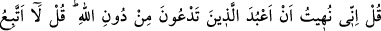
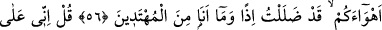
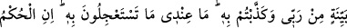
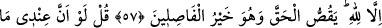
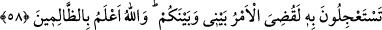
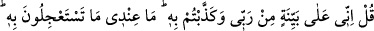
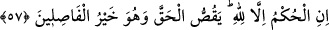

MÜŞRİKLERİN AZÂBI
ACELE İSTEMELERİ
56. De ki: Allah’ın dışında taptığınız şeylere tapmak bana yasak edildi. De ki:
Ben sizin arzularınıza uymam, aksi halde sapıtırım da hidayete erenlerden olmam.
57. De ki: Şüphesiz ben Rabbimden gelen apaçık bir delile dayanıyorum. Siz ise
onu yalanladınız. Çabucak gelmesini istediğiniz (azap) benim yanımda değildir.
Hüküm ancak Allah’ındır. O hakkı anlatır ve O, doğru hüküm verenlerin en
hayırlısıdır.
58. De ki: Acele istediğiniz şey benim elimde olsaydı, elbette benimle sizin
aranızda iş bitirilmişti. Allah zalimleri daha iyi bilir.
Kureyşliler, Peygamber (a.s.)’ı atalarının dinine çağırıyorlardı. Bunun üzerine bu âyet
nazil oldu.
“De ki: “Ben,” tevhid konusunda bana gösterilen delillerle ve indirilen âyetlerle, ne
olursa olsun “Allah’tan başka yalvardıklarınıza tapmaktan” ibadet ettiklerinize ibadet
etmekten “men olundum.” uzaklaştırıldım ve engellendim.
“De ki: Ben, sizin keyiflerinize uymam.” Bu ifade, yukarıdaki ‘men olunmanın
sebebine işaret etmektedir. Sanki onlar “Neden bizim yaptıklarımızdan men olundun ve
bize uymaktan geri durdun?” demişler, o da: “Sizin yaptıklarınız hevâdan ibârettir ve
hidayet değildir. O halde ben nasıl hevâya tâbi olayım ve hidayeti terkedeyim?” diye
cevap vermiştir.
“Çünkü o takdirde” sizin hevânıza uyacak olursam “sapıtmış” Hak yolunu terk etmiş
“ve hidâyete erenlerden” hidâyet yoluna girenlerden “olmamış olurum.”